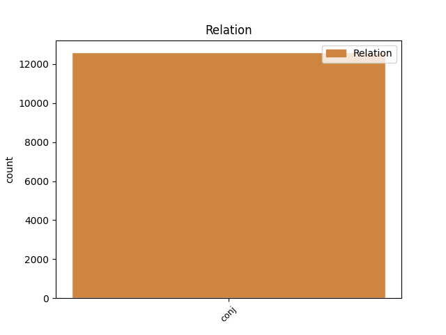
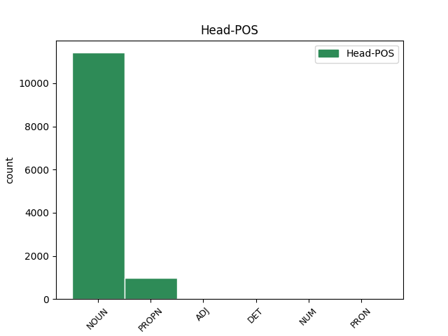
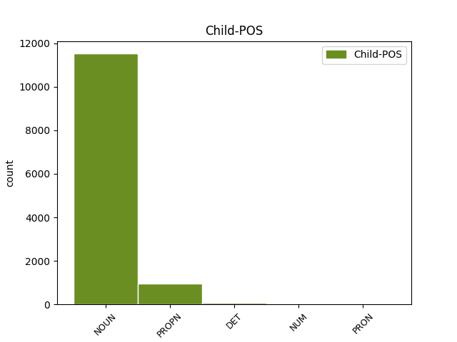

Distribution of features within this leaf



Agreement Rules sorted by frequency.
- When the dependent token is the conjunct(conj) of the head token, and the head token is NOUN and the dependent token is NOUN.
1 Elektronům _ _ _ _ 0 _ _ _
2 v _ _ _ _ 0 _ _ _
3 úplných _ _ _ _ 0 _ _ _
4 vnitřních _ _ _ _ 0 _ _ _
5 slupkách _ _ _ _ 0 _ _ _
6 říkáme _ _ _ _ 0 _ _ _
7 vnitřní _ _ _ _ 0 _ _ _
8 , _ _ _ _ 0 _ _ _
9 elektronům _ _ _ _ 0 _ _ _
10 v _ _ _ _ 0 _ _ _
11 krajní _ _ _ _ 0 _ _ _
12 slupce _ _ _ _ 0 _ _ _
13 obvodové _ _ _ _ 0 _ _ _
14 nebo _ _ _ _ 0 _ _ _
15 optické _ _ _ _ 0 _ _ _
16 či _ _ _ _ 0 _ _ _
17 valenční _ _ _ _ 0 _ _ _
18 , _ _ _ _ 0 _ _ _
19 protože _ _ _ _ 0 _ _ _
20 jejich _ _ _ _ 0 _ _ _
21 uspořádání _ _ _ _ 0 _ _ _
22 a _ _ _ _ 0 _ _ _
23 počet _ _ _ _ 0 _ _ _
24 určuje _ _ _ _ 0 _ _ _
25 optická _ _ _ _ 0 _ _ _
26 spektra spektrum NOUN NNNP4-----A---- Case=Acc|Gender=Neut|Number=Plur|Polarity=Pos 0 _ _ _
27 a _ _ _ _ 0 _ _ _
28 mocenství mocenství NOUN NNNS4-----A---- Case=Acc|Gender=Neut|Number=Sing|Polarity=Pos 26 conj _ _
29 prvků _ _ _ _ 0 _ _ _
30 . _ _ _ _ 0 _ _ _
1 Již _ _ _ _ 0 _ _ _
2 předtím _ _ _ _ 0 _ _ _
3 studovala _ _ _ _ 0 _ _ _
4 rozptyl _ _ _ _ 0 _ _ _
5 částic _ _ _ _ 0 _ _ _
6 paní _ _ _ _ 0 _ _ _
7 Curieová Curieová PROPN NNFS1-----A---- Case=Nom|Gender=Fem|NameType=Sur|Number=Sing|Polarity=Pos 0 _ _ _
8 - _ _ _ _ 0 _ _ _
9 Sklodowská Sklodowská PROPN NNFS1-----A---- Case=Nom|Gender=Fem|NameType=Sur|Number=Sing|Polarity=Pos 7 conj _ SpaceAfter=No
10 v _ _ _ _ 0 _ _ _
11 Paříži _ _ _ _ 0 _ _ _
12 . _ _ _ _ 0 _ _ _
1 Oesterwinter _ _ _ _ 0 _ _ _
2 a _ _ _ _ 0 _ _ _
3 Cohen _ _ _ _ 0 _ _ _
4 určovali _ _ _ _ 0 _ _ _
5 nové _ _ _ _ 0 _ _ _
6 elementy _ _ _ _ 0 _ _ _
7 drah _ _ _ _ 0 _ _ _
8 Měsíce Měsíc PROPN NNIS2-----A---- Animacy=Inan|Case=Gen|Gender=Masc|NameType=Geo|Number=Sing|Polarity=Pos 0 _ _ _
9 a _ _ _ _ 0 _ _ _
10 planet planeta NOUN NNFP2-----A---- Case=Gen|Gender=Fem|Number=Plur|Polarity=Pos 8 conj _ SpaceAfter=No
11 , _ _ _ _ 0 _ _ _
12 přičemž _ _ _ _ 0 _ _ _
13 vycházeli _ _ _ _ 0 _ _ _
14 ze _ _ _ _ 0 _ _ _
15 optických _ _ _ _ 0 _ _ _
16 pozorování _ _ _ _ 0 _ _ _
17 z _ _ _ _ 0 _ _ _
18 období _ _ _ _ 0 _ _ _
19 # _ _ _ _ 0 _ _ _
20 - _ _ _ _ 0 _ _ _
21 současnost _ _ _ _ 0 _ _ _
22 . _ _ _ _ 0 _ _ _
1 Uvedeme _ _ _ _ 0 _ _ _
2 heslovitě _ _ _ _ 0 _ _ _
3 několik _ _ _ _ 0 _ _ _
4 namátkou _ _ _ _ 0 _ _ _
5 vybraných _ _ _ _ 0 _ _ _
6 prací _ _ _ _ 0 _ _ _
7 , _ _ _ _ 0 _ _ _
8 Meyer _ _ _ _ 0 _ _ _
9 a _ _ _ _ 0 _ _ _
10 Palmore _ _ _ _ 0 _ _ _
11 , _ _ _ _ 0 _ _ _
12 Jefferys _ _ _ _ 0 _ _ _
13 a _ _ _ _ 0 _ _ _
14 Standish _ _ _ _ 0 _ _ _
15 , _ _ _ _ 0 _ _ _
16 Nové _ _ _ _ 0 _ _ _
17 třídy _ _ _ _ 0 _ _ _
18 periodických _ _ _ _ 0 _ _ _
19 drah _ _ _ _ 0 _ _ _
20 v _ _ _ _ 0 _ _ _
21 kruhovém _ _ _ _ 0 _ _ _
22 problému _ _ _ _ 0 _ _ _
23 , _ _ _ _ 0 _ _ _
24 Shelus _ _ _ _ 0 _ _ _
25 , _ _ _ _ 0 _ _ _
26 Dvouparametrická _ _ _ _ 0 _ _ _
27 soustava soustava NOUN NNFS1-----A---- Case=Nom|Gender=Fem|Number=Sing|Polarity=Pos 0 _ _ _
28 periodických _ _ _ _ 0 _ _ _
29 drah _ _ _ _ 0 _ _ _
30 v _ _ _ _ 0 _ _ _
31 eliptickém _ _ _ _ 0 _ _ _
32 problému _ _ _ _ 0 _ _ _
33 , _ _ _ _ 0 _ _ _
34 Broucke Broucke PROPN NNMS1-----A---- Animacy=Anim|Case=Nom|Gender=Masc|NameType=Sur|Number=Sing|Polarity=Pos 27 conj _ SpaceAfter=No
35 , _ _ _ _ 0 _ _ _
36 Srážkové _ _ _ _ 0 _ _ _
37 periodické _ _ _ _ 0 _ _ _
38 dráhy _ _ _ _ 0 _ _ _
39 v _ _ _ _ 0 _ _ _
40 eliptickém _ _ _ _ 0 _ _ _
41 problému _ _ _ _ 0 _ _ _
42 . _ _ _ _ 0 _ _ _
1 V _ _ _ _ 0 _ _ _
2 těchto tento DET PDXP6---------- Case=Loc|Number=Plur|PronType=Dem 0 _ _ _
3 a _ _ _ _ 0 _ _ _
4 mnoha mnoho DET Ca--6---------- Case=Loc|NumType=Card|PronType=Ind 2 conj _ LId=mnoho-1
5 dalších _ _ _ _ 0 _ _ _
6 aplikacích _ _ _ _ 0 _ _ _
7 se _ _ _ _ 0 _ _ _
8 ukazuje _ _ _ _ 0 _ _ _
9 použití _ _ _ _ 0 _ _ _
10 splinů _ _ _ _ 0 _ _ _
11 jako _ _ _ _ 0 _ _ _
12 výhodnější _ _ _ _ 0 _ _ _
13 než _ _ _ _ 0 _ _ _
14 použití _ _ _ _ 0 _ _ _
15 jiných _ _ _ _ 0 _ _ _
16 aproximačních _ _ _ _ 0 _ _ _
17 metod _ _ _ _ 0 _ _ _
18 . _ _ _ _ 0 _ _ _
1 Ve _ _ _ _ 0 _ _ _
2 stavebním _ _ _ _ 0 _ _ _
3 klempířství _ _ _ _ 0 _ _ _
4 se _ _ _ _ 0 _ _ _
5 používá _ _ _ _ 0 _ _ _
6 pájky _ _ _ _ 0 _ _ _
7 se _ _ _ _ 0 _ _ _
8 * _ _ _ _ 0 _ _ _
9 cínu _ _ _ _ 0 _ _ _
10 a _ _ _ _ 0 _ _ _
11 k _ _ _ _ 0 _ _ _
12 očištění _ _ _ _ 0 _ _ _
13 plechu _ _ _ _ 0 _ _ _
14 kyseliny _ _ _ _ 0 _ _ _
15 solné _ _ _ _ 0 _ _ _
16 ředěné _ _ _ _ 0 _ _ _
17 jedním jeden NUM ClZS7---------- Case=Ins|Gender=Masc,Neut|Number=Sing|NumForm=Word|NumType=Card|NumValue=1,2,3 0 _ _ _
18 až _ _ _ _ 0 _ _ _
19 dvěma dva NUM ClXP7---------- Case=Ins|Number=Plur|NumForm=Word|NumType=Card|NumValue=1,2,3 17 conj _ LNumValue=2
20 díly _ _ _ _ 0 _ _ _
21 vody _ _ _ _ 0 _ _ _
22 . _ _ _ _ 0 _ _ _
1 Těžiště _ _ _ _ 0 _ _ _
2 problému _ _ _ _ 0 _ _ _
3 je _ _ _ _ 0 _ _ _
4 , _ _ _ _ 0 _ _ _
5 vzhledem _ _ _ _ 0 _ _ _
6 k _ _ _ _ 0 _ _ _
7 tyristorové _ _ _ _ 0 _ _ _
8 regulaci _ _ _ _ 0 _ _ _
9 , _ _ _ _ 0 _ _ _
10 je _ _ _ _ 0 _ _ _
11 tedy _ _ _ _ 0 _ _ _
12 v _ _ _ _ 0 _ _ _
13 akustickém _ _ _ _ 0 _ _ _
14 pásmu _ _ _ _ 0 _ _ _
15 a _ _ _ _ 0 _ _ _
16 v _ _ _ _ 0 _ _ _
17 oblasti _ _ _ _ 0 _ _ _
18 nízkých _ _ _ _ 0 _ _ _
19 harmonických _ _ _ _ 0 _ _ _
20 , _ _ _ _ 0 _ _ _
21 těžištěm _ _ _ _ 0 _ _ _
22 energetických _ _ _ _ 0 _ _ _
23 úvah _ _ _ _ 0 _ _ _
24 je _ _ _ _ 0 _ _ _
25 první _ _ _ _ 0 _ _ _
26 harmonická harmonický ADJ AAFS1----1A---- Case=Nom|Degree=Pos|Gender=Fem|Number=Sing|Polarity=Pos 0 _ _ _
27 , _ _ _ _ 0 _ _ _
28 jalový _ _ _ _ 0 _ _ _
29 výkon _ _ _ _ 0 _ _ _
30 a _ _ _ _ 0 _ _ _
31 oblast oblast NOUN NNFS1-----A---- Case=Nom|Gender=Fem|Number=Sing|Polarity=Pos 26 conj _ _
32 nízkých _ _ _ _ 0 _ _ _
33 harmonických _ _ _ _ 0 _ _ _
34 , _ _ _ _ 0 _ _ _
35 deformační _ _ _ _ 0 _ _ _
36 výkon _ _ _ _ 0 _ _ _
37 . _ _ _ _ 0 _ _ _
1 V _ _ _ _ 0 _ _ _
2 současné _ _ _ _ 0 _ _ _
3 době _ _ _ _ 0 _ _ _
4 se _ _ _ _ 0 _ _ _
5 však _ _ _ _ 0 _ _ _
6 objevuje _ _ _ _ 0 _ _ _
7 řada _ _ _ _ 0 _ _ _
8 prací _ _ _ _ 0 _ _ _
9 , _ _ _ _ 0 _ _ _
10 které _ _ _ _ 0 _ _ _
11 tento _ _ _ _ 0 _ _ _
12 přístup _ _ _ _ 0 _ _ _
13 spojují _ _ _ _ 0 _ _ _
14 s _ _ _ _ 0 _ _ _
15 analýzou _ _ _ _ 0 _ _ _
16 názorů _ _ _ _ 0 _ _ _
17 a _ _ _ _ 0 _ _ _
18 postojů _ _ _ _ 0 _ _ _
19 pokusných _ _ _ _ 0 _ _ _
20 osob _ _ _ _ 0 _ _ _
21 , _ _ _ _ 0 _ _ _
22 uživatelů _ _ _ _ 0 _ _ _
23 , _ _ _ _ 0 _ _ _
24 autorů _ _ _ _ 0 _ _ _
25 sledovaných _ _ _ _ 0 _ _ _
26 dokumentů _ _ _ _ 0 _ _ _
27 , _ _ _ _ 0 _ _ _
28 a _ _ _ _ 0 _ _ _
29 dospívají _ _ _ _ 0 _ _ _
30 tak _ _ _ _ 0 _ _ _
31 nejen _ _ _ _ 0 _ _ _
32 k _ _ _ _ 0 _ _ _
33 přesnějšímu _ _ _ _ 0 _ _ _
34 popisu _ _ _ _ 0 _ _ _
35 objektivně _ _ _ _ 0 _ _ _
36 existujících _ _ _ _ 0 _ _ _
37 jazykových _ _ _ _ 0 _ _ _
38 charakteristik _ _ _ _ 0 _ _ _
39 dokumentů _ _ _ _ 0 _ _ _
40 , _ _ _ _ 0 _ _ _
41 ale _ _ _ _ 0 _ _ _
42 i _ _ _ _ 0 _ _ _
43 k _ _ _ _ 0 _ _ _
44 objektivnímu _ _ _ _ 0 _ _ _
45 poznání _ _ _ _ 0 _ _ _
46 sdělných _ _ _ _ 0 _ _ _
47 hodnot _ _ _ _ 0 _ _ _
48 textů _ _ _ _ 0 _ _ _
49 a _ _ _ _ 0 _ _ _
50 k _ _ _ _ 0 _ _ _
51 respektování _ _ _ _ 0 _ _ _
52 všech _ _ _ _ 0 _ _ _
53 složek _ _ _ _ 0 _ _ _
54 komunikačního _ _ _ _ 0 _ _ _
55 procesu _ _ _ _ 0 _ _ _
56 , _ _ _ _ 0 _ _ _
57 jimiž jenž PRON PJXP7---------- Case=Ins|Number=Plur|PrepCase=Npr|PronType=Rel 0 _ _ _
58 jsou _ _ _ _ 0 _ _ _
59 nejen _ _ _ _ 0 _ _ _
60 texty _ _ _ _ 0 _ _ _
61 a _ _ _ _ 0 _ _ _
62 jazyk _ _ _ _ 0 _ _ _
63 , _ _ _ _ 0 _ _ _
64 v _ _ _ _ 0 _ _ _
65 kterém _ _ _ _ 0 _ _ _
66 jsou _ _ _ _ 0 _ _ _
67 tyto _ _ _ _ 0 _ _ _
68 texty _ _ _ _ 0 _ _ _
69 zapsány _ _ _ _ 0 _ _ _
70 , _ _ _ _ 0 _ _ _
71 ale _ _ _ _ 0 _ _ _
72 stejnou _ _ _ _ 0 _ _ _
73 měrou míra NOUN NNFS7-----A---- Case=Ins|Gender=Fem|Number=Sing|Polarity=Pos 57 conj _ LGloss=(měřítko,poměr)
74 i _ _ _ _ 0 _ _ _
75 mluvčí _ _ _ _ 0 _ _ _
76 , _ _ _ _ 0 _ _ _
77 pisatelé _ _ _ _ 0 _ _ _
78 a _ _ _ _ 0 _ _ _
79 adresáti _ _ _ _ 0 _ _ _
80 sdělení _ _ _ _ 0 _ _ _
81 . _ _ _ _ 0 _ _ _
1 Horedt _ _ _ _ 0 _ _ _
2 zkoumal _ _ _ _ 0 _ _ _
3 možnost _ _ _ _ 0 _ _ _
4 zachycení _ _ _ _ 0 _ _ _
5 v _ _ _ _ 0 _ _ _
6 omezeném _ _ _ _ 0 _ _ _
7 kruhovém _ _ _ _ 0 _ _ _
8 problému _ _ _ _ 0 _ _ _
9 tří _ _ _ _ 0 _ _ _
10 těles _ _ _ _ 0 _ _ _
11 , _ _ _ _ 0 _ _ _
12 dvě _ _ _ _ 0 _ _ _
13 velká _ _ _ _ 0 _ _ _
14 tělesa _ _ _ _ 0 _ _ _
15 se _ _ _ _ 0 _ _ _
16 pohybují _ _ _ _ 0 _ _ _
17 kolem _ _ _ _ 0 _ _ _
18 sebe _ _ _ _ 0 _ _ _
19 po _ _ _ _ 0 _ _ _
20 kružnici _ _ _ _ 0 _ _ _
21 , _ _ _ _ 0 _ _ _
22 všechny _ _ _ _ 0 _ _ _
23 další _ _ _ _ 0 _ _ _
24 částice _ _ _ _ 0 _ _ _
25 mají _ _ _ _ 0 _ _ _
26 tak _ _ _ _ 0 _ _ _
27 malou _ _ _ _ 0 _ _ _
28 hmotu _ _ _ _ 0 _ _ _
29 , _ _ _ _ 0 _ _ _
30 že _ _ _ _ 0 _ _ _
31 neovlivňují _ _ _ _ 0 _ _ _
32 velká _ _ _ _ 0 _ _ _
33 tělesa těleso NOUN NNNP4-----A---- Case=Acc|Gender=Neut|Number=Plur|Polarity=Pos 0 _ _ _
34 ani _ _ _ _ 0 _ _ _
35 sebe se PRON P6-X4---------- Case=Acc|PronType=Prs|Reflex=Yes 33 conj _ LGloss=(zvr._zájmeno/částice)
36 navzájem _ _ _ _ 0 _ _ _
37 , _ _ _ _ 0 _ _ _
38 z _ _ _ _ 0 _ _ _
39 hlediska _ _ _ _ 0 _ _ _
40 pravděpodobnosti _ _ _ _ 0 _ _ _
41 , _ _ _ _ 0 _ _ _
42 jaký _ _ _ _ 0 _ _ _
43 bude _ _ _ _ 0 _ _ _
44 charakter _ _ _ _ 0 _ _ _
45 pohybu _ _ _ _ 0 _ _ _
46 částice _ _ _ _ 0 _ _ _
47 po _ _ _ _ 0 _ _ _
48 setkání _ _ _ _ 0 _ _ _
49 . _ _ _ _ 0 _ _ _
1 Účelem _ _ _ _ 0 _ _ _
2 analýz _ _ _ _ 0 _ _ _
3 těchto _ _ _ _ 0 _ _ _
4 souborů _ _ _ _ 0 _ _ _
5 hodnot _ _ _ _ 0 _ _ _
6 je _ _ _ _ 0 _ _ _
7 studium _ _ _ _ 0 _ _ _
8 prostorově _ _ _ _ 0 _ _ _
9 časového _ _ _ _ 0 _ _ _
10 rozložení rozložení NOUN NNNS2-----A---- Case=Gen|Gender=Neut|Number=Sing|Polarity=Pos 0 _ _ _
11 denní _ _ _ _ 0 _ _ _
12 variace _ _ _ _ 0 _ _ _
13 a _ _ _ _ 0 _ _ _
14 jejích jeho DET PSXP2FS3------- Case=Gen|Gender[psor]=Fem|Number=Plur|Number[psor]=Sing|Person=3|Poss=Yes|PronType=Prs 10 conj _ LGloss=(přivlast.)
15 harmonických _ _ _ _ 0 _ _ _
16 ve _ _ _ _ 0 _ _ _
17 složkách _ _ _ _ 0 _ _ _
18 geomagnetického _ _ _ _ 0 _ _ _
19 pole _ _ _ _ 0 _ _ _
20 pro _ _ _ _ 0 _ _ _
21 oblast _ _ _ _ 0 _ _ _
22 Evropy _ _ _ _ 0 _ _ _
23 . _ _ _ _ 0 _ _ _
1 Je _ _ _ _ 0 _ _ _
2 to _ _ _ _ 0 _ _ _
3 potřebné _ _ _ _ 0 _ _ _
4 proto _ _ _ _ 0 _ _ _
5 , _ _ _ _ 0 _ _ _
6 že _ _ _ _ 0 _ _ _
7 pomocí _ _ _ _ 0 _ _ _
8 problému _ _ _ _ 0 _ _ _
9 těles _ _ _ _ 0 _ _ _
10 se _ _ _ _ 0 _ _ _
11 někteří _ _ _ _ 0 _ _ _
12 pracovníci _ _ _ _ 0 _ _ _
13 snaží _ _ _ _ 0 _ _ _
14 vysvětlit _ _ _ _ 0 _ _ _
15 vlastnosti _ _ _ _ 0 _ _ _
16 některých _ _ _ _ 0 _ _ _
17 hvězdných _ _ _ _ 0 _ _ _
18 soustav _ _ _ _ 0 _ _ _
19 , _ _ _ _ 0 _ _ _
20 kde _ _ _ _ 0 _ _ _
21 jsme _ _ _ _ 0 _ _ _
22 svědky _ _ _ _ 0 _ _ _
23 realizace _ _ _ _ 0 _ _ _
24 problému _ _ _ _ 0 _ _ _
25 set sto NUM ClXP2---------- Case=Gen|Number=Plur|NumForm=Word|NumType=Card|NumValue=1,2,3 0 _ _ _
26 , _ _ _ _ 0 _ _ _
27 tisíců tisíc NOUN NNIP2-----A---- Animacy=Inan|Case=Gen|Gender=Masc|Number=Plur|Polarity=Pos 25 conj _ LId=tisíc-2|LNumValue=1000
28 nebo _ _ _ _ 0 _ _ _
29 i _ _ _ _ 0 _ _ _
30 mnoha _ _ _ _ 0 _ _ _
31 miliard _ _ _ _ 0 _ _ _
32 těles _ _ _ _ 0 _ _ _
33 . _ _ _ _ 0 _ _ _
1 Důležité důležitý ADJ AANS1----1A---- Case=Nom|Degree=Pos|Gender=Neut|Number=Sing|Polarity=Pos 0 _ _ _
2 je _ _ _ _ 0 _ _ _
3 provádět _ _ _ _ 0 _ _ _
4 je _ _ _ _ 0 _ _ _
5 během _ _ _ _ 0 _ _ _
6 a _ _ _ _ 0 _ _ _
7 co _ _ _ _ 0 _ _ _
8 nejrychleji _ _ _ _ 0 _ _ _
9 , _ _ _ _ 0 _ _ _
10 každý každý DET AAMS1----1A---- Animacy=Anim|Case=Nom|Degree=Pos|Gender=Masc|Number=Sing|Polarity=Pos|PronType=Tot 1 conj _ _
11 na _ _ _ _ 0 _ _ _
12 svoje _ _ _ _ 0 _ _ _
13 místo _ _ _ _ 0 _ _ _
14 . _ _ _ _ 0 _ _ _
1 Zvláštností _ _ _ _ 0 _ _ _
2 rozvoje _ _ _ _ 0 _ _ _
3 vědy _ _ _ _ 0 _ _ _
4 a _ _ _ _ 0 _ _ _
5 techniky _ _ _ _ 0 _ _ _
6 naší _ _ _ _ 0 _ _ _
7 doby _ _ _ _ 0 _ _ _
8 je _ _ _ _ 0 _ _ _
9 , _ _ _ _ 0 _ _ _
10 že _ _ _ _ 0 _ _ _
11 revoluční _ _ _ _ 0 _ _ _
12 převraty _ _ _ _ 0 _ _ _
13 ve _ _ _ _ 0 _ _ _
14 vědě _ _ _ _ 0 _ _ _
15 a _ _ _ _ 0 _ _ _
16 technice _ _ _ _ 0 _ _ _
17 vystupují _ _ _ _ 0 _ _ _
18 jako _ _ _ _ 0 _ _ _
19 různé _ _ _ _ 0 _ _ _
20 stránky _ _ _ _ 0 _ _ _
21 jednoho jeden NUM ClZS2---------- Case=Gen|Gender=Masc,Neut|Number=Sing|NumForm=Word|NumType=Card|NumValue=1,2,3 0 _ _ _
22 a _ _ _ _ 0 _ _ _
23 téhož týž DET PDZS2---------- Case=Gen|Gender=Masc,Neut|Number=Sing|PronType=Dem 21 conj _ _
24 procesu _ _ _ _ 0 _ _ _
25 vědeckotechnické _ _ _ _ 0 _ _ _
26 revoluce _ _ _ _ 0 _ _ _
27 . _ _ _ _ 0 _ _ _
1 Z _ _ _ _ 0 _ _ _
2 rozboru _ _ _ _ 0 _ _ _
3 v _ _ _ _ 0 _ _ _
4 předešlých _ _ _ _ 0 _ _ _
5 kapitolách _ _ _ _ 0 _ _ _
6 plyne _ _ _ _ 0 _ _ _
7 , _ _ _ _ 0 _ _ _
8 že _ _ _ _ 0 _ _ _
9 vliv _ _ _ _ 0 _ _ _
10 tyristorové _ _ _ _ 0 _ _ _
11 regulace _ _ _ _ 0 _ _ _
12 se _ _ _ _ 0 _ _ _
13 může _ _ _ _ 0 _ _ _
14 uplatnit _ _ _ _ 0 _ _ _
15 zhoršením _ _ _ _ 0 _ _ _
16 základní _ _ _ _ 0 _ _ _
17 harmonické _ _ _ _ 0 _ _ _
18 , _ _ _ _ 0 _ _ _
19 vzrůstem _ _ _ _ 0 _ _ _
20 podílu _ _ _ _ 0 _ _ _
21 nízkých _ _ _ _ 0 _ _ _
22 harmonických _ _ _ _ 0 _ _ _
23 vlivem _ _ _ _ 0 _ _ _
24 regulace _ _ _ _ 0 _ _ _
25 , _ _ _ _ 0 _ _ _
26 a _ _ _ _ 0 _ _ _
27 tím ten DET PDZS7---------- Case=Ins|Gender=Masc,Neut|Number=Sing|PronType=Dem 0 _ _ _
28 vzrůstem vzrůst NOUN NNIS7-----A---- Animacy=Inan|Case=Ins|Gender=Masc|Number=Sing|Polarity=Pos 27 conj _ LId=vzrůst-2
29 deformačního _ _ _ _ 0 _ _ _
30 výkonu _ _ _ _ 0 _ _ _
31 , _ _ _ _ 0 _ _ _
32 zhoršení _ _ _ _ 0 _ _ _
33 faktoru _ _ _ _ 0 _ _ _
34 výkonu _ _ _ _ 0 _ _ _
35 jistým _ _ _ _ 0 _ _ _
36 vzrůstem _ _ _ _ 0 _ _ _
37 rušení _ _ _ _ 0 _ _ _
38 v _ _ _ _ 0 _ _ _
39 akustickém _ _ _ _ 0 _ _ _
40 pásmu _ _ _ _ 0 _ _ _
41 , _ _ _ _ 0 _ _ _
42 vlivem _ _ _ _ 0 _ _ _
43 regulace _ _ _ _ 0 _ _ _
44 řídících _ _ _ _ 0 _ _ _
45 pulsů _ _ _ _ 0 _ _ _
46 . _ _ _ _ 0 _ _ _
1 Pro _ _ _ _ 0 _ _ _
2 ilustraci _ _ _ _ 0 _ _ _
3 snad _ _ _ _ 0 _ _ _
4 stačí _ _ _ _ 0 _ _ _
5 uvést _ _ _ _ 0 _ _ _
6 alespoň _ _ _ _ 0 _ _ _
7 některá _ _ _ _ 0 _ _ _
8 jména _ _ _ _ 0 _ _ _
9 , _ _ _ _ 0 _ _ _
10 Sternovi _ _ _ _ 0 _ _ _
11 , _ _ _ _ 0 _ _ _
12 Saussure _ _ _ _ 0 _ _ _
13 , _ _ _ _ 0 _ _ _
14 Buhlerovi Buhlerův ADJ AUMP1M--------- Animacy=Anim|Case=Nom|Gender=Masc|Gender[psor]=Masc|NameType=Sur|Number=Plur|Poss=Yes 0 _ _ _
15 , _ _ _ _ 0 _ _ _
16 Vygotskij Vygotskij PROPN NNMS1-----A---- Animacy=Anim|Case=Nom|Gender=Masc|NameType=Sur|Number=Sing|Polarity=Pos 14 conj _ SpaceAfter=No
17 , _ _ _ _ 0 _ _ _
18 Jakobson _ _ _ _ 0 _ _ _
19 , _ _ _ _ 0 _ _ _
20 Piaget _ _ _ _ 0 _ _ _
21 . _ _ _ _ 0 _ _ _
1 Mohou _ _ _ _ 0 _ _ _
2 to _ _ _ _ 0 _ _ _
3 být _ _ _ _ 0 _ _ _
4 spojení _ _ _ _ 0 _ _ _
5 jako _ _ _ _ 0 _ _ _
6 všechno _ _ _ _ 0 _ _ _
7 čisté _ _ _ _ 0 _ _ _
8 , _ _ _ _ 0 _ _ _
9 všechno všechno PRON PLNS1---------- Case=Nom|Gender=Neut|Number=Sing|PronType=Tot 0 _ _ _
10 hotovo _ _ _ _ 0 _ _ _
11 , _ _ _ _ 0 _ _ _
12 všechno všechno PRON PLNS1---------- Case=Nom|Gender=Neut|Number=Sing|PronType=Tot 9 conj _ _
13 suché _ _ _ _ 0 _ _ _
14 . _ _ _ _ 0 _ _ _
1 Proto _ _ _ _ 0 _ _ _
2 není _ _ _ _ 0 _ _ _
3 vždy _ _ _ _ 0 _ _ _
4 pravoúhlá _ _ _ _ 0 _ _ _
5 a _ _ _ _ 0 _ _ _
6 pak _ _ _ _ 0 _ _ _
7 některé některý DET PZIP1---------- Animacy=Inan|Case=Nom|Gender=Masc|Number=Plur|PronType=Ind 0 _ _ _
8 nebo _ _ _ _ 0 _ _ _
9 všechny všechno PRON PLIP1---------- Animacy=Inan|Case=Nom|Gender=Masc|Number=Plur|PronType=Tot 7 conj _ _
10 meziosní _ _ _ _ 0 _ _ _
11 úhly _ _ _ _ 0 _ _ _
12 * _ _ _ _ 0 _ _ _
13 . _ _ _ _ 0 _ _ _
1 Lednický _ _ _ _ 0 _ _ _
2 zámek _ _ _ _ 0 _ _ _
3 , _ _ _ _ 0 _ _ _
4 park park NOUN NNIS1-----A---- Animacy=Inan|Case=Nom|Gender=Masc|Number=Sing|Polarity=Pos 0 _ _ _
5 , _ _ _ _ 0 _ _ _
6 který _ _ _ _ 0 _ _ _
7 ho _ _ _ _ 0 _ _ _
8 obklopuje _ _ _ _ 0 _ _ _
9 , _ _ _ _ 0 _ _ _
10 jeden jeden NUM ClYS1---------- Case=Nom|Gender=Masc|Number=Sing|NumForm=Word|NumType=Card|NumValue=1,2,3 4 conj _ LNumValue=1
11 z _ _ _ _ 0 _ _ _
12 největších _ _ _ _ 0 _ _ _
13 skleníků _ _ _ _ 0 _ _ _
14 u _ _ _ _ 0 _ _ _
15 nás _ _ _ _ 0 _ _ _
16 a _ _ _ _ 0 _ _ _
17 blízké _ _ _ _ 0 _ _ _
18 rybníky _ _ _ _ 0 _ _ _
19 , _ _ _ _ 0 _ _ _
20 to _ _ _ _ 0 _ _ _
21 je _ _ _ _ 0 _ _ _
22 bezpochyby _ _ _ _ 0 _ _ _
23 jedno _ _ _ _ 0 _ _ _
24 z _ _ _ _ 0 _ _ _
25 nejkrásnějších _ _ _ _ 0 _ _ _
26 , _ _ _ _ 0 _ _ _
27 a _ _ _ _ 0 _ _ _
28 proto _ _ _ _ 0 _ _ _
29 i _ _ _ _ 0 _ _ _
30 nejnavštěvovanějších _ _ _ _ 0 _ _ _
31 míst _ _ _ _ 0 _ _ _
32 v _ _ _ _ 0 _ _ _
33 celém _ _ _ _ 0 _ _ _
34 Československu _ _ _ _ 0 _ _ _
35 . _ _ _ _ 0 _ _ _
1 Máme _ _ _ _ 0 _ _ _
2 v _ _ _ _ 0 _ _ _
3 naší _ _ _ _ 0 _ _ _
4 republice _ _ _ _ 0 _ _ _
5 také _ _ _ _ 0 _ _ _
6 občany _ _ _ _ 0 _ _ _
7 , _ _ _ _ 0 _ _ _
8 kteří _ _ _ _ 0 _ _ _
9 ze _ _ _ _ 0 _ _ _
10 zákoutí _ _ _ _ 0 _ _ _
11 vnitřní _ _ _ _ 0 _ _ _
12 emigrace _ _ _ _ 0 _ _ _
13 zpochybňují _ _ _ _ 0 _ _ _
14 a _ _ _ _ 0 _ _ _
15 ironizují _ _ _ _ 0 _ _ _
16 všechno všechno PRON PLNS4---------- Case=Acc|Gender=Neut|Number=Sing|PronType=Tot 0 _ _ _
17 a _ _ _ _ 0 _ _ _
18 všechny všechen DET PLYP4---------- Case=Acc|Gender=Masc|Number=Plur|PronType=Tot 16 conj _ SpaceAfter=No
19 . _ _ _ _ 0 _ _ _
1 Jistě _ _ _ _ 0 _ _ _
2 , _ _ _ _ 0 _ _ _
3 porovnáme _ _ _ _ 0 _ _ _
4 asi _ _ _ _ 0 _ _ _
5 neporovnatelné _ _ _ _ 0 _ _ _
6 , _ _ _ _ 0 _ _ _
7 ale _ _ _ _ 0 _ _ _
8 jak _ _ _ _ 0 _ _ _
9 jinak _ _ _ _ 0 _ _ _
10 vyjádřit _ _ _ _ 0 _ _ _
11 uznání _ _ _ _ 0 _ _ _
12 a _ _ _ _ 0 _ _ _
13 obdiv _ _ _ _ 0 _ _ _
14 takovým _ _ _ _ 0 _ _ _
15 Brunclíkům _ _ _ _ 0 _ _ _
16 , _ _ _ _ 0 _ _ _
17 Židům _ _ _ _ 0 _ _ _
18 , _ _ _ _ 0 _ _ _
19 Čížkům _ _ _ _ 0 _ _ _
20 , _ _ _ _ 0 _ _ _
21 Králům Král PROPN NNMP3-----A---- Animacy=Anim|Case=Dat|Gender=Masc|NameType=Sur|Number=Plur|Polarity=Pos 0 _ _ _
22 a _ _ _ _ 0 _ _ _
23 mnoha mnoho DET Ca--3---------- Case=Dat|NumType=Card|PronType=Ind 21 conj _ LId=mnoho-1
24 jiným _ _ _ _ 0 _ _ _
25 . _ _ _ _ 0 _ _ _
1 Uvidíme _ _ _ _ 0 _ _ _
2 proto _ _ _ _ 0 _ _ _
3 nárazovou _ _ _ _ 0 _ _ _
4 vlnu _ _ _ _ 0 _ _ _
5 oddělenou _ _ _ _ 0 _ _ _
6 od _ _ _ _ 0 _ _ _
7 magnetopauzy _ _ _ _ 0 _ _ _
8 , _ _ _ _ 0 _ _ _
9 která _ _ _ _ 0 _ _ _
10 se _ _ _ _ 0 _ _ _
11 bude _ _ _ _ 0 _ _ _
12 nacházet _ _ _ _ 0 _ _ _
13 mezi _ _ _ _ 0 _ _ _
14 ní on PRON P5FS7--3------- Case=Ins|Gender=Fem|Number=Sing|Person=3|PrepCase=Pre|PronType=Prs 0 _ _ _
15 a _ _ _ _ 0 _ _ _
16 Sluncem Slunce PROPN NNNS7-----A---- Case=Ins|Gender=Neut|NameType=Geo|Number=Sing|Polarity=Pos 14 conj _ SpaceAfter=No
17 . _ _ _ _ 0 _ _ _
Disagree Examples:
1 Je _ _ _ _ 0 _ _ _
2 povinen _ _ _ _ 0 _ _ _
3 * _ _ _ _ 0 _ _ _
4 zásady zásada NOUN NNFP4-----A---- Case=Acc|Gender=Fem|Number=Plur|Polarity=Pos 0 _ _ _
5 socialistického _ _ _ _ 0 _ _ _
6 soužití _ _ _ _ 0 _ _ _
7 a _ _ _ _ 0 _ _ _
8 ustanovení ustanovení NOUN NNNS2-----A---- Case=Gen|Gender=Neut|Number=Sing|Polarity=Pos 4 conj _ LDeriv=ustanovit
9 tohoto _ _ _ _ 0 _ _ _
10 domovního _ _ _ _ 0 _ _ _
11 řádu _ _ _ _ 0 _ _ _
12 a _ _ _ _ 0 _ _ _
13 vytvářet _ _ _ _ 0 _ _ _
14 tak _ _ _ _ 0 _ _ _
15 společně _ _ _ _ 0 _ _ _
16 se _ _ _ _ 0 _ _ _
17 správou _ _ _ _ 0 _ _ _
18 domu _ _ _ _ 0 _ _ _
19 podmínky _ _ _ _ 0 _ _ _
20 zaručující _ _ _ _ 0 _ _ _
21 všem _ _ _ _ 0 _ _ _
22 obyvatelům _ _ _ _ 0 _ _ _
23 domu _ _ _ _ 0 _ _ _
24 nerušené _ _ _ _ 0 _ _ _
25 užívání _ _ _ _ 0 _ _ _
26 bytů _ _ _ _ 0 _ _ _
27 , _ _ _ _ 0 _ _ _
28 společných _ _ _ _ 0 _ _ _
29 prostor _ _ _ _ 0 _ _ _
30 a _ _ _ _ 0 _ _ _
31 zařízení _ _ _ _ 0 _ _ _
32 domu _ _ _ _ 0 _ _ _
33 . _ _ _ _ 0 _ _ _
1 Nepostará _ _ _ _ 0 _ _ _
2 - _ _ _ _ 0 _ _ _
3 li _ _ _ _ 0 _ _ _
4 se _ _ _ _ 0 _ _ _
5 uživatel _ _ _ _ 0 _ _ _
6 bytu _ _ _ _ 0 _ _ _
7 o _ _ _ _ 0 _ _ _
8 včasné _ _ _ _ 0 _ _ _
9 provedení _ _ _ _ 0 _ _ _
10 drobných _ _ _ _ 0 _ _ _
11 oprav opravit NOUN NNFP2-----A---- Aspect=Perf|Case=Gen|Gender=Fem|Number=Plur|Polarity=Pos 0 _ _ _
12 a _ _ _ _ 0 _ _ _
13 obvyklé _ _ _ _ 0 _ _ _
14 údržby údržba NOUN NNFP4-----A---- Case=Acc|Gender=Fem|Number=Plur|Polarity=Pos 11 conj _ _
15 bytu _ _ _ _ 0 _ _ _
16 nebo _ _ _ _ 0 _ _ _
17 neodstraní _ _ _ _ 0 _ _ _
18 - _ _ _ _ 0 _ _ _
19 li _ _ _ _ 0 _ _ _
20 závady _ _ _ _ 0 _ _ _
21 , _ _ _ _ 0 _ _ _
22 za _ _ _ _ 0 _ _ _
23 které _ _ _ _ 0 _ _ _
24 odpovídá _ _ _ _ 0 _ _ _
25 , _ _ _ _ 0 _ _ _
26 má _ _ _ _ 0 _ _ _
27 správa _ _ _ _ 0 _ _ _
28 domu _ _ _ _ 0 _ _ _
29 právo _ _ _ _ 0 _ _ _
30 učinit _ _ _ _ 0 _ _ _
31 tak _ _ _ _ 0 _ _ _
32 po _ _ _ _ 0 _ _ _
33 předchozím _ _ _ _ 0 _ _ _
34 upozornění _ _ _ _ 0 _ _ _
35 uživatele _ _ _ _ 0 _ _ _
36 na _ _ _ _ 0 _ _ _
37 jeho _ _ _ _ 0 _ _ _
38 náklad _ _ _ _ 0 _ _ _
39 sama _ _ _ _ 0 _ _ _
40 . _ _ _ _ 0 _ _ _
1 O _ _ _ _ 0 _ _ _
2 vrácení _ _ _ _ 0 _ _ _
3 a _ _ _ _ 0 _ _ _
4 převzetí _ _ _ _ 0 _ _ _
5 bytu _ _ _ _ 0 _ _ _
6 sepíše _ _ _ _ 0 _ _ _
7 správa _ _ _ _ 0 _ _ _
8 domu _ _ _ _ 0 _ _ _
9 zápis _ _ _ _ 0 _ _ _
10 , _ _ _ _ 0 _ _ _
11 v _ _ _ _ 0 _ _ _
12 němž _ _ _ _ 0 _ _ _
13 uvede _ _ _ _ 0 _ _ _
14 stav _ _ _ _ 0 _ _ _
15 bytu byt NOUN NNIS2-----A---- Animacy=Inan|Case=Gen|Gender=Masc|Number=Sing|Polarity=Pos 0 _ _ _
16 , _ _ _ _ 0 _ _ _
17 příslušenství příslušenství NOUN NNNS4-----A---- Case=Acc|Gender=Neut|Number=Sing|Polarity=Pos 15 conj _ _
18 a _ _ _ _ 0 _ _ _
19 označí _ _ _ _ 0 _ _ _
20 zjištěné _ _ _ _ 0 _ _ _
21 závady _ _ _ _ 0 _ _ _
22 , _ _ _ _ 0 _ _ _
23 * _ _ _ _ 0 _ _ _
24 - _ _ _ _ 0 _ _ _
25 li _ _ _ _ 0 _ _ _
26 tyto _ _ _ _ 0 _ _ _
27 závady _ _ _ _ 0 _ _ _
28 odstranit _ _ _ _ 0 _ _ _
29 uživatel _ _ _ _ 0 _ _ _
30 bytu _ _ _ _ 0 _ _ _
31 , _ _ _ _ 0 _ _ _
32 stanoví _ _ _ _ 0 _ _ _
33 správa _ _ _ _ 0 _ _ _
34 domu _ _ _ _ 0 _ _ _
35 zároveň _ _ _ _ 0 _ _ _
36 lhůtu _ _ _ _ 0 _ _ _
37 a _ _ _ _ 0 _ _ _
38 způsob _ _ _ _ 0 _ _ _
39 jejich _ _ _ _ 0 _ _ _
40 odstranění _ _ _ _ 0 _ _ _
41 . _ _ _ _ 0 _ _ _
1 Smetí _ _ _ _ 0 _ _ _
2 , _ _ _ _ 0 _ _ _
3 odpadky _ _ _ _ 0 _ _ _
4 a _ _ _ _ 0 _ _ _
5 vychladlý _ _ _ _ 0 _ _ _
6 popel _ _ _ _ 0 _ _ _
7 se _ _ _ _ 0 _ _ _
8 vysypávají _ _ _ _ 0 _ _ _
9 v _ _ _ _ 0 _ _ _
10 době _ _ _ _ 0 _ _ _
11 od _ _ _ _ 0 _ _ _
12 # _ _ _ _ 0 _ _ _
13 do _ _ _ _ 0 _ _ _
14 # _ _ _ _ 0 _ _ _
15 hodin _ _ _ _ 0 _ _ _
16 a _ _ _ _ 0 _ _ _
17 od _ _ _ _ 0 _ _ _
18 # _ _ _ _ 0 _ _ _
19 do _ _ _ _ 0 _ _ _
20 # _ _ _ _ 0 _ _ _
21 hodin _ _ _ _ 0 _ _ _
22 , _ _ _ _ 0 _ _ _
23 a _ _ _ _ 0 _ _ _
24 to _ _ _ _ 0 _ _ _
25 i _ _ _ _ 0 _ _ _
26 o _ _ _ _ 0 _ _ _
27 nedělích _ _ _ _ 0 _ _ _
28 a _ _ _ _ 0 _ _ _
29 svátcích _ _ _ _ 0 _ _ _
30 , _ _ _ _ 0 _ _ _
31 pouze _ _ _ _ 0 _ _ _
32 do _ _ _ _ 0 _ _ _
33 nádob nádoba NOUN NNFP2-----A---- Case=Gen|Gender=Fem|Number=Plur|Polarity=Pos 0 _ _ _
34 k _ _ _ _ 0 _ _ _
35 tomu _ _ _ _ 0 _ _ _
36 určených _ _ _ _ 0 _ _ _
37 a _ _ _ _ 0 _ _ _
38 takovým _ _ _ _ 0 _ _ _
39 způsobem způsob NOUN NNIS7-----A---- Animacy=Inan|Case=Ins|Gender=Masc|Number=Sing|Polarity=Pos 33 conj _ SpaceAfter=No
40 , _ _ _ _ 0 _ _ _
41 aby _ _ _ _ 0 _ _ _
42 by _ _ _ _ 0 _ _ _
43 byla _ _ _ _ 0 _ _ _
44 zachována _ _ _ _ 0 _ _ _
45 co _ _ _ _ 0 _ _ _
46 největší _ _ _ _ 0 _ _ _
47 čistota _ _ _ _ 0 _ _ _
48 . _ _ _ _ 0 _ _ _
1 V _ _ _ _ 0 _ _ _
2 socialistickém _ _ _ _ 0 _ _ _
3 společenském _ _ _ _ 0 _ _ _
4 řádu _ _ _ _ 0 _ _ _
5 je _ _ _ _ 0 _ _ _
6 osvobozená _ _ _ _ 0 _ _ _
7 lidská _ _ _ _ 0 _ _ _
8 práce _ _ _ _ 0 _ _ _
9 základním _ _ _ _ 0 _ _ _
10 zdrojem _ _ _ _ 0 _ _ _
11 rozvoje rozvoj NOUN NNIS2-----A---- Animacy=Inan|Case=Gen|Gender=Masc|Number=Sing|Polarity=Pos 0 _ _ _
12 společnosti _ _ _ _ 0 _ _ _
13 i _ _ _ _ 0 _ _ _
14 růstu růst NOUN NNIS6-----A---- Animacy=Inan|Case=Loc|Gender=Masc|Number=Sing|Polarity=Pos 11 conj _ LId=růst-1
15 hmotné _ _ _ _ 0 _ _ _
16 a _ _ _ _ 0 _ _ _
17 kulturní _ _ _ _ 0 _ _ _
18 úrovně _ _ _ _ 0 _ _ _
19 občanů _ _ _ _ 0 _ _ _
20 . _ _ _ _ 0 _ _ _